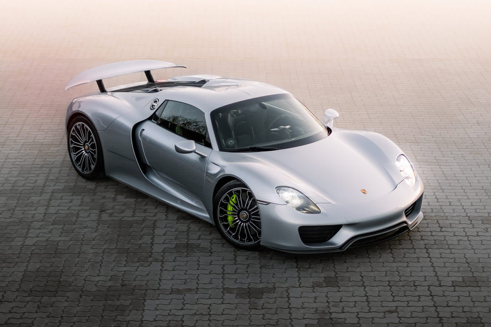

Porsche 918 Spyder
De Porsche 918 Spyder is een baanbrekende plug-in hybride hypercar die in 2013 werd geïntroduceerd als onderdeel van de exclusieve groep hypercars, bekend als de "Holy Trinity". Deze term verwijst naar de drie meest opmerkelijke hypercars die rond dezelfde tijd werden uitgebracht door vooraanstaande fabrikanten van supersportauto's.
De 918 Spyder wordt aangedreven door een geavanceerde hybride aandrijflijn, bestaande uit een hoogtoerige V8-motor en twee elektromotoren, waarmee het voertuig indrukwekkende prestaties kan leveren terwijl het ook in staat is om korte afstanden puur op elektrische energie te rijden. Het totale systeemvermogen overschrijdt 870 pk, waardoor de 918 Spyder in staat is tot verbluffende acceleratie en een topsnelheid van meer dan 340 km/u.
Wat de Porsche 918 Spyder bijzonder maakt, is zijn veelzijdigheid. Het voertuig kan efficiënt functioneren als een elektrische auto voor stadsritten, maar kan ook worden getransformeerd in een high-performance hypercar op het circuit. Het beschikt over geavanceerde aerodynamica, een koolstofvezel monocoque chassis en een vierwielaangedreven systeem voor optimale grip en wendbaarheid.
In het bredere perspectief van de "Holy Trinity" wordt de Porsche 918 Spyder vaak vergeleken met de Ferrari LaFerrari en de McLaren P1. Samen vertegenwoordigen deze drie hypercars het toppunt van technologische innovatie en prestatiegericht ontwerp in de autowereld. Elke auto in de Holy Trinity heeft zijn eigen unieke benadering van prestaties en technologie, maar gezamenlijk hebben ze de normen voor wat mogelijk is in de wereld van hypercars herdefinieerd, waardoor een iconische en tijdloze drie-eenheid is ontstaan.
Kortom, de Porsche 918 Spyder onderscheidt zich door zijn indrukwekkende prestaties, geavanceerde hybride technologie en een aantrekkelijk ontwerp, wat het een integraal onderdeel maakt van de Holy Trinity van hypercars.